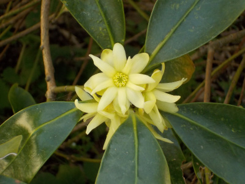
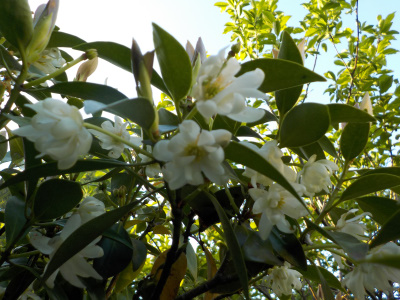
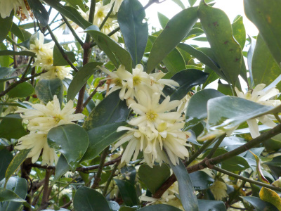
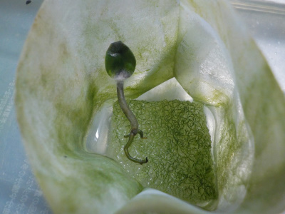
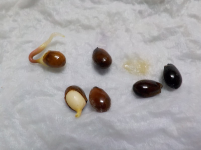
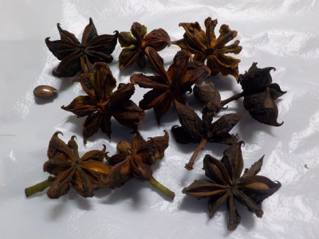

遊びで植物を育てよう
2024/03/17
シキミが咲きました。

もうすぐお彼岸ですね。
【シキミTOP】
【木TOP】
【園芸TOP】
2023/03/11
お茶の木の花。

シキミが咲いていました。
前に種から育てようとして失敗しましたが、再挑戦しようかな。
【シキミTOP】
【木TOP】
【園芸TOP】
2022/05/04
シキミは花の期間が長いですね。

3月くらいから咲いていますが、5月になっても花があります。
花を見る用に鉢植えがあってもいいかな。お墓に供える木が玄関にあるのは嫌かな。やっぱり止めよう。
【シキミTOP】
【木TOP】
【園芸TOP】
2021/03/21
シキミの花が沢山咲いていました。

お彼岸には花の付いたシキミを供えました。
花があると賑やかになりますね。
【シキミTOP】 【木TOP】 【園芸TOP】
2020/05/16
シキミが枯れました。

黒くなって枯れました。少しカビも生えています。
根が出てから成長が遅かったので、環境が合わない可能性が高いです。
【シキミTOP】 【木TOP】 【園芸TOP】
2020/03/19
シキミの根っこが出ました。

もともと種は沢山あったんですが、実が入ってなかったりカビが生えたりして残ったのはこれだけです。
只今2つ根っこが出ました。
【シキミTOP】 【木TOP】 【園芸TOP】
2019/12/08
シキミの種です。

シキミの種は毒があるみたいですね。
取扱いに注意です。
【シキミTOP】
【木TOP】
【園芸TOP】
畑仕事じゃないよ。
【おいしいものを食べよう。】【たくさん寝よう。】
【ソロ活をしよう!】【季節感のあることをしよう。】【動画視聴はほどほどに。】【当サイトの全てのコンテンツは無断転載禁止です。】